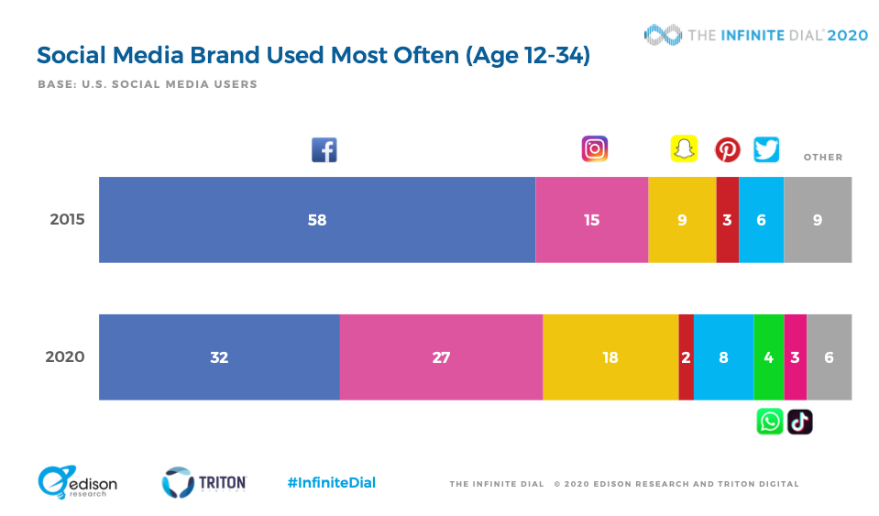
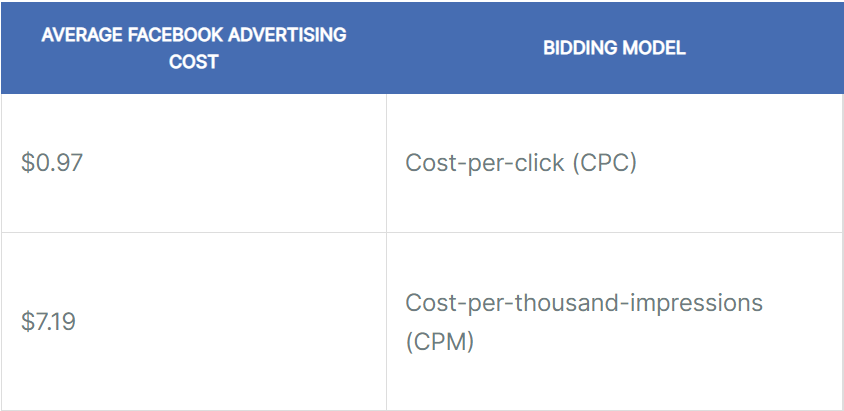
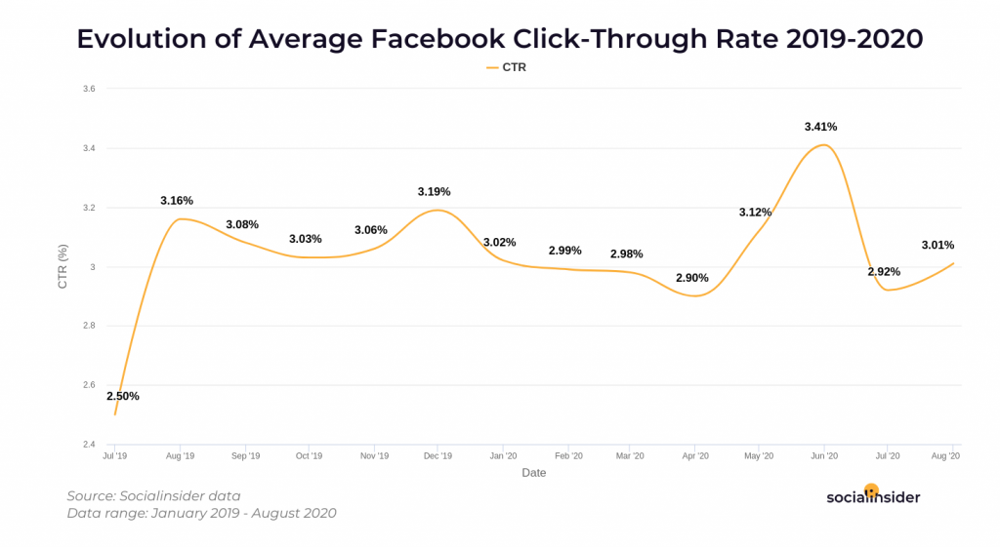

<?xml version="1.0" encoding="UTF-8"?><rss version="2.0"
	xmlns:content="http://purl.org/rss/1.0/modules/content/"
	xmlns:wfw="http://wellformedweb.org/CommentAPI/"
	xmlns:dc="http://purl.org/dc/elements/1.1/"
	xmlns:atom="http://www.w3.org/2005/Atom"
	xmlns:sy="http://purl.org/rss/1.0/modules/syndication/"
	xmlns:slash="http://purl.org/rss/1.0/modules/slash/"
	>

<channel>
	<title>Hike POS Software</title>
	<atom:link href="index.html" rel="self" type="application/rss+xml" />
	<link>http://hikeup.com/</link>
	<description></description>
	<lastBuildDate>Mon, 12 Jul 2021 05:54:48 +0000</lastBuildDate>
	<language>en</language>
	<sy:updatePeriod>
	hourly	</sy:updatePeriod>
	<sy:updateFrequency>
	1	</sy:updateFrequency>
	<generator>https://wordpress.org/?v=5.7.2</generator>

<image>
	<url>https://hikeup.com/wp-content/uploads/cropped-favicon-3-32x32.png</url>
	<title>Hike POS Software</title>
	<link>http://hikeup.com/</link>
	<width>32</width>
	<height>32</height>
</image> 
	<item>
		<title>Hike’s crash course on Facebook advertising</title>
		<link>https://hikeup.com/blog/hikes-crash-course-on-facebook-advertising/</link>
		
		<dc:creator><![CDATA[Hiren Savjiyani]]></dc:creator>
		<pubDate>Mon, 12 Jul 2021 05:18:51 +0000</pubDate>
				<category><![CDATA[Business]]></category>
		<category><![CDATA[Marketing]]></category>
		<guid isPermaLink="false">https://hikeup.com/?p=53152</guid>

					<description><![CDATA[<p>Since Facebook was founded in 2004, year by year it has grown into the most widely recognised social media platform on the planet. Now boasting a user base of 2.85 billion, it’s no surprise that the blue website has also become a central hub for web marketing and brand awareness in general. But with all&#8230; <a href="../../../hikes-crash-course-on-facebook-advertising/index.html" class="more-link">Read more</a></p>
<p>The post <a rel="nofollow" href="../../../hikes-crash-course-on-facebook-advertising/index.html">Hike’s crash course on Facebook advertising</a> appeared first on <a rel="nofollow" href="../../../../index.html">Hike POS Software</a>.</p>
]]></description>
										<content:encoded><![CDATA[
<p>Since Facebook was founded in 2004, <span id="more-53152"></span>year by year it has grown into the most widely recognised social media platform on the planet. Now boasting a <a href="https://www.statista.com/statistics/264810/number-of-monthly-active-facebook-users-worldwide/" target="_blank" rel="noreferrer noopener">user base of 2.85 billion</a>, it’s no surprise that the blue website has also become a central hub for web marketing and brand awareness in general. </p>


<p>But with all of the noise out there in the world of social media posting with thousands of businesses vying for your attention, you’d be forgiven for wondering how on earth you can get seen on Facebook or whether it’s worth your effort. Read on to get a better understanding of how it all works and where to start!</p>


<h2>Why should I use Facebook?</h2>


<p>While there’s no doubt Facebook is a massive service, other platforms such as Instagram and Snapchat have started to close the gap in recent years, which may lead you to ask if Facebook is still the best option. The fact remains though that in terms of daily userbase Facebook is still streets ahead of the others.</p>


<figure class="wp-block-image size-large"></figure>


<p>This is largely due to Facebook’s ability to reach a wider age demographic when compared to Instagram and Snapchat, who have a much more pronounced <a href="https://napoleoncat.com/blog/instagram-users-in-australia/" target="_blank" rel="noreferrer noopener">fall off after the 25–34-year-old age bracket</a>. This means that using Facebook as the main platform for an advertising campaign can be highly beneficial if you feel your products apply to those in older age brackets as well.</p>


<p>Something else to take into consideration when deciding what platform to advertise on is the criteria that a user must meet in order to be shown one of your ads. An example of this being the difference between Facebook ads vs Google ads.</p>


<p>When a user is shown your advert on Google, it’s because they searched a keyword that is associated with your ad, hence it appearing for the user. This differs to Facebook primarily in the fact that people aren’t actively searching so much for products on Facebook as much as they are just generally on the platform for its social media usage, and ads happen to be there.</p>


<p>This may seem like a minor piece of information but the distinction is important, as it is effectively the difference between driving high conversion on leads that are already somewhat interested in the product or service (Google) vs actively promoting a product or brand to someone that may not have otherwise have been looking/interested in that product (Facebook).</p>


<h2>You want me to pay HOW MUCH?</h2>


<p>Yep, here comes the nitty gritty part but don’t fret! As far as advertising as a whole is concerned, one of Facebook’s most appealing aspects and best arguments for its usage, is in fact its price.</p>


<p>When looking at Facebook advertising costs, there are 2 key metrics to keep in mind. The first one is Cost per Click (CPC). The second is Cost Per Thousand Impressions or sometimes known as Cost per Mille (CPM). The difference in these two is centred mainly around what your goal for the ad is. E.g. do you want to put this ad up primarily for brand exposure and getting your name out there? Or is this ad’s purpose solely to generate clicks and (hopefully!) conversions? If the first option speaks to you, CPM might be best. If it’s the latter that you’re looking for, CPC could be what you need. More on this below.</p>


<p>There are ups and downs to both CPC and CPM but the short of it is that if you are not looking to experiment too much with different ad types and ad campaigns and just want to keep it sweet and simple, then Cost Per Click is probably best for you. This way you only pay for actual interested traffic that has clicked on your ad.</p>


<p>However, Facebook is such a vast space that allows a lot of room for movement and experimenting with different ad types. As such you may feel inclined to try new ad styles with different products or different wording and get an idea of what actually works best for you and your business. If that’s the case then it will be beneficial to pay by CPM as this way your ad’s main purpose is to be put in front of as many people as possible. This way you’ll be charged per thousand people that your ad gets put in front of, whether they engage with it or not.</p>


<figure class="wp-block-image size-large"></figure>


<p class="has-text-align-center smaller">Source: <a href="https://www.webfx.com/social-media/how-much-does-facebook-advertising-cost.html" target="_blank" rel="noreferrer noopener">WebFX</a></p>


<p>The above image is on average and it should be mentioned that these numbers can and do change from time to time based on the industry and ad type in question.</p>


<h2>How do I know if it’s working?</h2>


<p>The obvious answer is that you’ll be selling more products. But it goes deeper than that, a lot deeper.</p>


<p>The key element to knowing how your campaign <em>went</em> is to have a clear idea at the start, of where you want your campaign to <em>go. </em>This means setting a campaign goal early on and using that as an initial metric of success. You don’t need to shoot for the moon here, you just need to have an idea in mind of what sort of return you would be satisfied with based on the time and money you’ve invested.</p>


<p>It can also be tricky to know the success of your ad if you don’t have anything to benchmark it against. This touches on an important point that we mentioned earlier. Experiment. Get a few ads out there, try new things and see what works. It isn’t easy to gauge success without anything to measure it against. You could spend a week going through all the information that signifies your ad’s effectiveness. But without getting too bogged down with the analytics and statistics, here are a few indicators that you can look for if you don’t have any previous ads to benchmark against.</p>


<h3><strong>Click Through Rate (CTR)</strong></h3>


<p>Simply put, this is the percentage of people that see your ad and actually click on it. Below is some historical data on the average CTR on Facebook. This obviously isn’t the be all and end all of advert success, but it’s an interesting metric to show how interesting your ad is to your audience.</p>


<figure class="wp-block-image size-large"></figure>


<p class="has-text-align-center smaller">Source: <a href="https://www.socialinsider.io/blog/facebook-ads-research/#status" target="_blank" rel="noreferrer noopener">Socialinsider</a></p>


<h3><strong>Impressions</strong>.</h3>


<p>This is how many Facebook users your advert has been put in front of or “served” to. As mentioned earlier this is a metric based on which you may choose to be charged, so it definitely helps to understand it. The drawback of impressions being that it’s difficult to draw any concrete findings from this statistic as it is not a given that people who see your ad will purchase your product. This is best suited to reach and exposure orientated campaigns.</p>


<h3><strong>Return on Investment/Conversion</strong></h3>


<p><strong>ROI is important in everything you do as a business owner and is of course, in many instances, the main reason for advertising in the first place. Seeing a markable uptick in sales directly from people clicking through your advert and making purchases is the end goal. But as with all of these indicators, it doesn’t necessarily tell the whole story. This doesn’t give voice to those potential customers who saw the ad, were reminded of the business again and are now closer to making a purchase down the track. </strong></p>


<p><strong>The point here is to not feel bogged down with any individual metric but to look at them as a whole and view them through the lens of what your initial goal/target was. After all, while you may be competing with other businesses for the customer’s attention, your main competition is your last ad and trying to improve on that will yield the best results.</strong><strong></strong></p>


<p><strong>For a run through on using Facebook Ad Manager as well the steps to set up your ad click </strong><a href="https://www.impactplus.com/blog/how-to-use-facebook-ads-manager" target="_blank" rel="noreferrer noopener">here</a><strong>. If you’d like to speak to us at Hike about the capabilities of our system and how it can assist with your online and in-store sales click </strong><a href="https://calendly.com/hikeup/initial-consult?month=2021-06" target="_blank" rel="noreferrer noopener">here</a><strong> to book an initial consultation.</strong></p>
<p>The post <a rel="nofollow" href="../../../hikes-crash-course-on-facebook-advertising/index.html">Hike’s crash course on Facebook advertising</a> appeared first on <a rel="nofollow" href="../../../../index.html">Hike POS Software</a>.</p>
]]></content:encoded>
					
		
		
			</item>
		<item>
		<title>How to Make Your Retail Business More Environmentally and Socially Conscious</title>
		<link>https://hikeup.com/blog/how-to-make-your-retail-business-more-environmentally-and-socially-conscious/</link>
		
		<dc:creator><![CDATA[Hiren Savjiyani]]></dc:creator>
		<pubDate>Mon, 06 Jul 2020 07:00:07 +0000</pubDate>
				<category><![CDATA[Business]]></category>
		<category><![CDATA[Retail]]></category>
		<guid isPermaLink="false">https://hikeup.com/?p=48869</guid>

					<description><![CDATA[<p>Today, we are only ever the touch of a button away from the latest and most important information. Over the last decade, the news has made us even more aware of the impact that humans have on the planet. Humans affect the physical environment in many ways, and our actions have triggered a range of&#8230; <a href="../../../how-to-make-your-retail-business-more-environmentally-and-socially-conscious/index.html" class="more-link">Read more</a></p>
<p>The post <a rel="nofollow" href="../../../how-to-make-your-retail-business-more-environmentally-and-socially-conscious/index.html">How to Make Your Retail Business More Environmentally and Socially Conscious</a> appeared first on <a rel="nofollow" href="../../../../index.html">Hike POS Software</a>.</p>
]]></description>
										<content:encoded><![CDATA[
<p> Today, we are only ever the touch of a button away from the latest and most<span id="more-48869"></span> important information. Over the last decade, the news has made us even more aware of the impact that humans have on the planet. Humans affect the physical environment in many ways, and our actions have triggered a range of potentially devastating consequences – climate change, soil erosion, poor air quality, pollution and undrinkable water.  </p>


<p> One result of this increased awareness is that issues such as climate change and excess waste production as well as unethical labour practices and lack of diversity matter far more to people than they did a few decades ago. Furthermore, the majority of consumers are now actively making the choice to favour business that are actively aware of their environmental and social responsibilities and are taking steps to fulfil them. </p>


<p> A <a href="https://www.conecomm.com/research-blog/2017-csr-study">2017 study</a> carried out by Cone Communications found that: </p>


<p><strong>76%</strong> of consumers will refuse to purchase a company’s products or services if they discover that it supports an issue contrary to their personal beliefs.</p>


<p><strong>78%</strong> of consumers want companies to address important social justice issues.</p>


<p><strong>87%</strong> of consumers will purchase a product or service because the company selling it advocates for an issue that they personally care about.</p>


<p>While people feel that their own environmentally conscious decisions can make a big difference to the world, they also want the brands and businesses that they support to help them achieve this. <a href="https://www.wearefuterra.com/wp-content/uploads/2019/06/Futerra-Honest-Product-V5.pdf">A research study</a> conducted by Futerra in 2019 found that a whopping <strong>98%</strong> of people surveyed felt that brands have a responsibility to make positive change in the world. Here’s looking at you! </p>


<p>So, what can you do to make your small business more environmentally and socially conscious? </p>


<h2>Switch to sustainable packaging</h2>


<p>Most businesses need to use packaging in some way, whether it is to wrap goods that you sell in store, or to ship them to customers in your country or internationally. In the past, plastic was one of retailers preferred packaging materials owing to its durability, which makes it good at protecting products in transit. It is also very thin, which means it uses fewer resources and takes up less space for both storage and transport. Studies estimate that packaging accounts for <strong>40%</strong> of plastic usage. Unfortunately, currently only <strong>9% </strong>of the world’s plastic is recycled. Any that isn’t takes centuries to break down, but it never fully decomposes and instead wreaks havoc on our wildlife and ecosystems.</p>


<p>While no packaging or reusable packaging is ideal, if you need to use some, paper and cardboard are considered the most environmentally friendly due to the fact that the vast majority can be recycled. Some initiatives that you could try in your retail store include:</p>


<ul><li>Incentives for customers
bringing their own reusable bags or packaging. This could be in the form of a
discount or loyalty points.&nbsp; </li></ul>


<ul><li>Use recycled materials in your
own packaging wherever you can. </li></ul>


<ul><li>Consider multipurpose
packaging. For example, clothing retailer H&amp;M have bought out a <a href="https://www.behance.net/gallery/18587077/H-M-Sustainable-Retail-Packaging">shopping
bag that turns into a clothes hanger</a> – yes really! You can also add extra value
to the packaging by making the box you use reusable itself. British retailer of
clothes for young girls, Monday’s Child, has created an
environmentally-conscious <a href="https://packhelp.co.uk/sustainable-packaging/">box that doubles as a
doll’s house</a>!</li></ul>


<p>It is also worth considering which suppliers you use and if they use recyclable packaging when they ship products to you. If you really want to ramp up your environmental awareness, you could see if there are alternative suppliers which practice more socially conscious practises without affecting your bottom line. </p>


<p><a href="https://news.mcdonalds.com/news-releases/news-release-details/2025-all-mcdonalds-packaging-come-renewable-recycled-or-0">McDonald’s</a> has pledged to ensure that all of its packaging will be 100% renewable and recycled by 2025 which is some serious commitment. And sustainable packaging won’t just lower your environmental impact and make your customers happy, it will also set your business apart from your competitors. Many retailers are using stickers and postcards enclosed with their packaging to explain their commitment to more sustainable practices. Make sure you also use your mailing list, website and social media channels to communicate what you are doing and why.</p>


<h2>Make it easier for your customers to lower their environmental footprint</h2>


<p>As we know, consumers want the support of brands in lowering their own personal environmental impact. As such, helping your customers to offset the effects of their own retail habits will not only make them more likely to shop with you, but it will also boost your own sustainability efforts. Exactly how you can do this will depend on the type of retailer you are and the products and/or services that you offer. For example:</p>


<p>If you are an electronics retailer, you could collaborate with a local recycling partner to encourage customers coming to your store to bring their old printer cartridges or mobile phones in, offering a purchasing initiative to do so. Retail giant <a href="https://www.apple.com/shop/trade-in">Apple</a> don’t only offer in-store recycling &#8211; it is also possible for customers to ship electronics to them for recycling for free. If your device still has value, you will be able to trade it in for credit towards your next purchase or receive a gift card for future use. Similarly, Staples has created a program that allows customers to earn $2 in rewards for every ink cartridge that they recycle in store or by mail when they spend at least $30 on ink or toner. </p>


<p>If you have a café or other food or beverage outlet that offers takeaway, you can show your commitment to a sustainable future by supporting and incentivising the use of reusable drinking vessels. Most single use coffee cups are non-recyclable, and estimates suggest it can take 50 years for them to fully break down when in landfill. When there is around 2.5 <em>billion</em> of them thrown away every year, that is a <strong>lot</strong> of unnecessary waste. Lots of independent and chain cafes are giving discounts and rewards to eco-conscious consumers who take their own reusable cup. In the UK, <a href="https://www.pret.co.uk/en-GB/sustainability">Pret A Manger</a> offer customers a 50p discount off their drink of choice when it is supplied in a reusable cup. In addition to this, they are also committed to reducing food waste by donating all of their unsold food to charities at the end of the day through <a href="https://www.pret.co.uk/en-GB/pret-foundation">The Pret Foundation</a>. </p>


<h2>Support a non-profit organisation</h2>


<p> Is there a cause that is close to the heart of your retail business or the employees who work for you? Research from the <a href="http://ppqty.com/2010_Cone_Study.pdf">Cone Cause Evolution Study</a> reveals that <strong>85%</strong> of consumers have a more positive image of a product or company when it supports a charity that they care about, with as many as <strong>80%</strong> of people surveyed stating that they would switch to buying from a company that supports a charity provided the product or service was equal in quality and price. This doesn’t have to be a large non-profit organisation. In fact, local charities where your consumers can often see first-hand exactly how any donations are being spent are largely preferred to larger, well-known non-profits. </p>


<p>It’s important to remember that your charity efforts should ideally resonate with your target audience, so do your research before committing to a cause. This will help to get their attention, and gain their trust, loyalty and respect. Instead of just writing a check for your chosen charity each financial quarter, try and be creative with how you offer support. </p>


<p>Shoe retailer TOMS began life as a One for One company, giving away a pair of shoes to people in need for every pair purchased online or instore and to date, they have given away almost 100 million shoes. They are now diversifying their commitment to remaining socially conscious by dedicating one third of their net annual profits to a range of charitable organisations including mental health, equal opportunities and, from April 1<sup>st</sup>, 2020, a COVID-19 giving fund.&nbsp; </p>


<p>Meanwhile, <a href="https://www.facebook.com/watch/?v=1481198555316483">Petco</a> chose to donate pet toys to a number of animal shelters as part of their Tuesday Giving efforts and UK retailer John Lewis provide their staff with an opportunity to volunteer for up to six months, on full pay and benefits, through their flagship volunteering programme, The Golden Jubilee Trust. Since it was created in 2000, the trust has facilitated the donation of over 393,000 volunteer hours to charitable causes, representing a community value of over £25 million. As a small or medium-sized business, you could arrange for all staff to volunteer for a day at a local charity</p>


<h2>Promote ethical labour practises</h2>


<p>When you think about social responsibility, charity donations and volunteering tend to be some of the first things that you consider. However, social consciousness begins at home – or in this case – in your retail store. One of the first things that any retailer who wants to be socially conscious should so is to make sure that they are following ethical labour practises within their own business. This means:</p>


<ul><li> A work environment that is safe and healthy </li><li>Providing employees with fair compensation for their work</li><li>Hiring employees using a fair recruitment process that doesn’t discriminate based on age, sex, race, colour, sexual orientation, religion etc</li><li>Enabling growth opportunities within your company</li><li>Valuing your team and their work</li><li> Treating all members of staff equally, with respect and dignity </li></ul>


<p>Not only do ethical labour practices show that as an employer, you care about your staff and are committed to ensuring fair compensation for work, but ethical behaviours also create a happy workforce which in turn ensures maximum productivity from your team. </p>


<h2>Embrace inclusion and diversity</h2>


<p>Retailers can expect better performance when they offer products, services and experiences that reflect what shoppers want and value. Unsurprisingly, one of the key things that consumers want is to feel valued for who they are. As a result, inclusion and diversity are extremely important to the success of any business. A study by <a href="https://www.accenture.com/gb-en/insights/retail/inclusion-diversity-retail">Accenture</a> found that shoppers are not only turning away from brands that don’t share their values, they are also turning towards those which celebrate diversity and promote inclusion. Their research showed:</p>


<p><strong>42%</strong> of ethnic minority shoppers would switch to a retailer committed to inclusion and diversity.</p>


<p><strong>41%</strong> of LGBT shoppers would switch to a retailer committed to inclusion and diversity.</p>


<p>There are a range of ways in which you can ensure a more inclusive shopping experience for your customers. Your </p>


<p><strong>Your products:</strong> Choose products that address the diverse needs of your customers. For example, if you are a retailer selling wedding gifts, be sure to stock those that are for Mr &amp; Mr and Mrs &amp; Mrs, as well as Mr &amp; Mrs. </p>


<p><strong>Inclusive advertising:</strong> If you are advertising your retail business, make sure that these reflect the diversity of consumers and are inclusive to all types of people. For example, you could produce certain aspects of flyers in Braille, produce window displays with mannequins in a variety of skin tones or sizes like <a href="https://www.independent.co.uk/life-style/nike-plus-size-mannequin-london-store-niketown-a8946196.html">Nike</a> who now use plus-size mannequins too, or if your store is in an area with a large community speaking a different language, produce advertising in this language as well as your native tongue. </p>


<p><strong>Your workforce:</strong> Don’t forget to teach your staff the important of inclusion and diversity by incorporating training into your recruitment and onboarding process. This will ensure that new team members will understand your expectations from the very beginning. Earlier this year, Sephora closed 400 stores across the United States for diversity and inclusion training. </p>


<h2>Go paperless</h2>


<p> Although perhaps not as much as a conventional office, many retailers still go through a considerable amount of paper every day. Some of the ways in which you may be using paper unconsciously include: </p>


<ul><li>Notebooks or purchase order pads for taking orders</li><li>Invoices</li><li>Receipts </li><li>Reports</li><li>Inventory lists</li><li>Rotas </li></ul>


<p>A great cloud-based point of sale system like <a href="../../../../gb/index.html">Hike</a> can help retailers to reduce the amount of paper that they use and streamline their processes so that they aren’t reliant on paperwork which could be illegible or become lost or damaged. </p>


<p>There are a range of paperless functions that Hike can support your business with:</p>


<ul><li>Full or partial stock-takes with inventory entered directly onto your POS via your iPad/tablet.</li><li>Store customer purchase history for both in-store and online purchases in one centralised system. </li><li>Safe, secure cloud-based storage of customer details.</li><li>Track loyalty points, gift card balances and more.</li><li>Accounting integrations that enable you to track suppliers and customers in one system.</li><li>Email invoices directly to customers complete with your company’s personal branding.</li><li>Email communications directly to customers.</li><li>Send receipts to customers via email, so that they don’t lose them, and you don’t need to use paper and ink to print them. </li><li>Set up staff rotas online.</li></ul>


<p>Reducing your paper usage will help keep your store uncluttered and simplify your processes so that you can continue to meet customer expectations and show that you are a forward-thinking, environmentally-conscious business.&nbsp;&nbsp; </p>


<p>Cloud-based POS systems like <a href="../../../../index.html">Hike</a> can help your retail business to find ways to become more environmentally and socially conscious, whether it is by making important decisions about the resources you use or the donations you make, or helping you save paper. For your non-obligation 14 day trial, please <a href="https://my.hikeup.com/signup?_ga=2.31725050.553149863.1593708877-760964111.1593708877">get in touch</a>!</p>
<p>The post <a rel="nofollow" href="../../../how-to-make-your-retail-business-more-environmentally-and-socially-conscious/index.html">How to Make Your Retail Business More Environmentally and Socially Conscious</a> appeared first on <a rel="nofollow" href="../../../../index.html">Hike POS Software</a>.</p>
]]></content:encoded>
					
		
		
			</item>
		<item>
		<title>Future-Proofing Your Retail Business for a Post-Pandemic World</title>
		<link>https://hikeup.com/blog/future-proofing-your-retail-business-for-a-post-pandemic-world/</link>
		
		<dc:creator><![CDATA[Hiren Savjiyani]]></dc:creator>
		<pubDate>Fri, 17 Apr 2020 14:08:07 +0000</pubDate>
				<category><![CDATA[Business]]></category>
		<category><![CDATA[Retail]]></category>
		<guid isPermaLink="false">https://hikeup.com/?p=48205</guid>

					<description><![CDATA[<p>Let’s face it, no retail business could have possibly prepared for the scale of disruption that the current global pandemic of Covid-19 has caused. However, it isn’t only pandemics that can trigger such immense disruption to our usual way of life. Natural disasters, political misadventures, war and economic catastrophes can all have a negative impact&#8230; <a href="../../../future-proofing-your-retail-business-for-a-post-pandemic-world/index.html" class="more-link">Read more</a></p>
<p>The post <a rel="nofollow" href="../../../future-proofing-your-retail-business-for-a-post-pandemic-world/index.html">Future-Proofing Your Retail Business for a Post-Pandemic World</a> appeared first on <a rel="nofollow" href="../../../../index.html">Hike POS Software</a>.</p>
]]></description>
										<content:encoded><![CDATA[
<p>Let’s face it, no retail business could have possibly <span id="more-48205"></span>prepared for the scale of disruption that the current global pandemic of Covid-19 has caused. However, it isn’t only pandemics that can trigger such immense disruption to our usual way of life. Natural disasters, political misadventures, war and economic catastrophes can all have a negative impact on the way in which we make a living, sometimes putting them under immense strain to cope. &nbsp;</p>


<p>Nevertheless, there are lessons that retailers can learn to ensure that they can bounce back following this crisis and are resilient enough to survive should another unprecedented event such as this ever occur again in the future. There is no time like the present to think about future-proofing your retail business for the new world that awaits us. Here are some of the key areas in which you can prepare.  </p>


<h2 class="has-text-color even-cl" style="color:#35bdb9">Multiple Sales Channels</h2>


<p class="even-cl">If Covid-19 has taught retailers one thing it is that for them to be successful in challenging times, they need to embrace more than a single sales channel. Those businesses that have continued to trade, despite the restrictions on stores opening their doors, have been those who have been able to continue selling online. They may have already had an online presence, quickly adapted their own website or used one of the many selling platforms available online to ensure that they could continue to serve their customers. </p>


<p class="even-cl">Getting your business online is more important than ever. An increasing number of people now shop using the internet, and in 2020, ecommerce sales are expected to account for more than 15% of retail sales worldwide. There are various reasons for this. The most significant is that it gives customers the ability to make purchases at all hours of the day and night. However, as this global pandemic has shown, an ecommerce store has also made it possible for customers to continue to access the products and services of many retail businesses during this unprecedented time. For many, this has been a lifeline in terms of obtaining essential supplies to keep them safe and healthy. </p>


<div class="wp-block-image even-cl"><figure class="aligncenter size-large"></figure></div>


<p class="even-cl">Fortunately, getting started with your own ecommerce store is easier than ever, especially if you have one of the latest Point of Sale (POS) systems. <a href="../../../../software-features/add-ons/index.html">Hike</a> integrates with both Shopify and BigCommerce, two of the best ecommerce platforms available. Using these, it is simple to set up your online store. Both are cloud-based, SaaS shopping cart solutions where paying a monthly fee gives you access to an admin panel where you can enter store data, add products and process orders. Better still, you can customize your design to suit your business identity. Setting up Hike’s integrations with these platforms takes just minutes, meaning you can get cracking with your online store and start selling extremely quickly – something which is important in a rapidly changing retail landscape such as that which we have seen during this pandemic. </p>


<h2 class="has-text-color" style="color:#35bdb9">Inventory and Stock Control</h2>


<p>You can’t sell what you don’t have available and it is this fact that makes managing your inventory so crucial at any time, but particularly when you are limited as to which channels of sale and distribution you can use. If you have products to sell that you know will be in particularly high demand, it is even more important to ensure that you have the necessary stock to fulfil any online orders so that you don’t end up letting your customers down. This could lead to high levels of dissatisfaction and affect your business reputation as well as jeopardizing future orders. </p>


<figure class="wp-block-image size-large"></figure>


<p>Fortunately, having a great POS can make all of your inventory worries go away. With a full-service POS like Hike, it is easy to keep track of the products that you have. Uploading your products and their variants is easy and can be changed at the touch of a button to reflect any new stock items or eliminated lines. When you then use your POS to sell, whether in store or online, each time a transaction completed your inventory will be automatically updated everywhere, keeping you in total control of your stock levels wherever you are and however purchases are made. You can even set reminders when stock levels are low to remind you to obtain more through the supply chain. All this means is that you can be there to serve your customers day to day and in an unprecedented time, when they need you most. </p>


<h2 class="has-text-color" style="color:#35bdb9">Real Time Reporting</h2>


<p>Real time reporting enables retailers to make smarter, faster business decisions which is particularly important if we enter another time in the future where the retail landscape makes a sudden shift. Therefore, it makes sense to choose a POS system that offers retailers the opportunity to view and analyze their data in a myriad of ways and at the touch of a button from anywhere in the world. </p>


<figure class="wp-block-image size-large"></figure>


<p>Comprehensive analytics make it possible for retailers to see which of their products are performing well, how their inventory is moving and which platforms customers are using to make their purchases. Is there a particular product that is suddenly selling very quickly? If so, identifying it through reporting could enable you to restock it and fulfil customer demand, whilst also taking advantage of the increased sales to boost your business at an uncertain time. And to make sure that you can react quickly to sudden changes in sales patterns, you can even set monitoring triggers for particular scenarios that will instantly notify you should they occur. </p>


<h2 class="has-text-color" style="color:#35bdb9">Contactless Payments</h2>


<p>The Covid-19 pandemic and the requirement for social distancing has meant that the way in which many retailers process their transactions has also needed to change. Whilst many businesses already accept other types of payments, the need for contactless transactions has meant that even more consumers have moved away from using cash as their primary way to pay. </p>


<p>Payment preference is important at any time. Some customers like to put all of their monthly purchases onto their credit card and pay it off at a time that suits them, rather than using available funds. Others prefer to pay via Paypal or Apple Pay or use gift cards or store credit that they may have accumulated via loyalty points. You can maximize on potential sales opportunities by giving your customers a range of payment options both online and instore. </p>


<figure class="wp-block-image size-large"></figure>


<p>Again, this is where choosing the right POS is invaluable. Many, like Hike, integrate with a number of payment providers globally, making it easier than ever to process payments wherever the sale is taking place. Other payment types that can be supported on POS systems include cheque, loyalty points, split payments, store credit, gift cards and even layaway or BNPL (Buy Now Pay Later). Enabling customers to pay using store credit, loyalty points and BNPL can be particularly beneficial in times of economic crisis, helping them to obtain the products that they need without risk to your business. </p>


<p>In addition, most POS systems will allow retailers to send receipts for purchases made in store via email. All the customer needs to do is to give you their email address at the point of purchase (unless you have this as part of your loyalty scheme already). This is another valuable way in which you can minimize contact and ensure that the customer can still receive proof of their purchase with you. </p>


<h2 class="has-text-color" style="color:#35bdb9">Keeping Customers Informed</h2>


<p>There is absolutely no point still trading in a time of crisis if no one knows that you are doing so. Keeping your customers informed with what is happening with your retail business is crucial – both to enable them to still make purchases and to show them that you value their custom. If you are still trading from your bricks and mortar store, you can advise customers of the practices that you are putting in place to ensure that they can shop safely and comfortably. This could include information about different opening times, how you will be taking payments, any rules on things like social distancing or other changes to your usual mode of operation. If you are only operating online, you can still contact your customers to let them know that this is how you are trading at the time and what to expect from your service. </p>


<figure class="wp-block-image size-large"></figure>


<p>And as we know, there are lots of effective ways at keeping in contact with customers. If you operate a loyalty scheme, you should have customer details logged on your POS which you can then use, alongside integrations such as Mailchimp, to send emails to them to keep them up to date with the latest developments of your business. In addition to contacting your customers directly, you can also use social media and updates to your website to keep them informed. Social media channels, such as Instagram and Facebook, are particularly useful for providing quick updates and announcing any sudden changes to your usual method of practice – for example, suddenly changing your opening hours or moving over to online-only sales. This is crucial for keeping customers happy and aware of how you can continue to support them through changing times. </p>


<h2 class="has-text-color" style="color:#35bdb9">Putting operational plans in place</h2>


<p>In the event that a similar-scale experience to the current pandemic happens in the future, you should use this time to put plans in place for how you are going to stay operational. You should make figuring out some alternative operating procedures a priority so that your business is ready to react quickly if it needs to. This will help to reduce confusion and wasted time deciding what needs to be done and enables you to proactively react to the changing situation. For example:</p>


<figure class="wp-block-image size-large"></figure>


<ul><li>Determine how you will continue to operate in different circumstances – opening times, staffing, rotas, chain of supervision, what you can and will sell and what forms of payment you will accept.</li><li>Consider the health and safety of your workforce and customers above all else, and how you will protect this.</li><li>Have a plan in place for how you will communicate changes with your customers.</li><li>If you don’t already, try and obtain customer information so that you can contact them directly if you need to in the future.</li><li>Set up an ecommerce store or have the right POS in place so that you can integrate one quickly if you need to.</li><li>Determine who you will use to fulfil deliveries and have a back-up option in place.</li><li>Get your business on social media.</li><li>Be sure to obtain your information about any legal or health and safety requirements you must meet from reliable sources. </li><li> Ensure your employees are properly trained on what will happen and how they will need to operate and refresh this training annually.   </li></ul>


<h2 class="has-text-color" style="color:#35bdb9"> Upgrading your POS to future-proof your store </h2>


<p> It’s clear to see that having a great Point of Sale system is integral to the success of a retail business at any time, but particularly during times of uncertainty and crisis when the viability of any store relies on its ability to quickly adapt to change. A great POS provides retail owners with total control over the key elements of their business at the touch of a button and from anywhere in the world. Being unable to be physically present is no longer a barrier to managing your store, continuing to trade or navigating successfully through tough times when you choose a cloud-based system that has everything that you need to run and grow your business. </p>


<figure class="wp-block-image size-large"></figure>


<p>If you haven’t yet upgraded your POS to one with all of the capabilities needed to keep the finger on the pulse of your retail business, contact <a href="../../../../index.html">Hike</a> today to schedule a free trial of our all-in-one retail platform. </p>


<p>There is no doubt that the shockwaves of the Covid-19 pandemic will continue to reverberate throughout the retail industry long after the virus has been eradicated. Future-proofing your retail business will help to ensure that you remain as resilient as you can in a post-pandemic world. </p>
<p>The post <a rel="nofollow" href="../../../future-proofing-your-retail-business-for-a-post-pandemic-world/index.html">Future-Proofing Your Retail Business for a Post-Pandemic World</a> appeared first on <a rel="nofollow" href="../../../../index.html">Hike POS Software</a>.</p>
]]></content:encoded>
					
		
		
			</item>
		<item>
		<title>How to Make Money with YouTube</title>
		<link>https://hikeup.com/blog/how-to-make-money-with-youtube/</link>
		
		<dc:creator><![CDATA[Hiren Savjiyani]]></dc:creator>
		<pubDate>Mon, 16 Dec 2019 05:32:40 +0000</pubDate>
				<category><![CDATA[Business]]></category>
		<guid isPermaLink="false">https://hikeup.com/?p=47688</guid>

					<description><![CDATA[<p>YouTube is now so popular that it is hard to imagine life before it existed. There are an estimated 1.9 billion users logging into to use it every month, and these range from kids that spend hours watching skits and shows, to adults watching helpful tutorials that can teach you just about anything, from how&#8230; <a href="../../../how-to-make-money-with-youtube/index.html" class="more-link">Read more</a></p>
<p>The post <a rel="nofollow" href="../../../how-to-make-money-with-youtube/index.html">How to Make Money with YouTube</a> appeared first on <a rel="nofollow" href="../../../../index.html">Hike POS Software</a>.</p>
]]></description>
										<content:encoded><![CDATA[
<p>


YouTube
is now so popular that it is hard to imagine life before it <span id="more-47688"></span> existed. There are
an estimated 1.9 billion users logging into to use it every month, and these
range from kids that spend hours watching skits and shows, to adults watching helpful
tutorials that can teach you just about anything, from how to knit to how to
change a plug socket, there is pretty much nothing that you can’t find on
YouTube if you look hard enough. After all, around 500 hours of video are
estimated to be uploaded to the site every minute of the day, 24 hours a day,
365 days a year. However, YouTube represents more than just a platform for
information, entertaining and more. Used right, it is perfectly possible to
make a lucrative income from the content that is shared on it. 


</p>


<p>Most people and businesses that start a
YouTube channel don’t do so with the intention of making money. Videos
represent an innovative and successful way for you to engage with your target
audience in a personal but non-invasive way. They can watch at a time and in a
place that is convenient to them, and they can discover what they want to about
your business without feeling any pressure at all. YouTube keeps everything
completely on their terms. </p>


<p>


Do
you want to make money with YouTube? Read on to find out how.


</p>


<h2>The YouTube Partner Program</h2>


<p>One of the first things to be aware of is
that you’ll need to apply for and be accepted into the YouTube Partner Program
(YPP) in order to earn revenue from your YouTube channel. There are specific
requirements that you will need to meet in order to be able to be accepted, and
each advertising feature has its own set of eligibility requirements on top of
subscriber and view count requirements. The reason for this is to ensure that
your content meets both the legal requirements in every area where the feature
is available, and because YouTube want to ensure that only good quality content
is rewarded. </p>


<p>


The
minimum eligibility requirements to turn on the monetization features are:


</p>


<table class="wp-block-table"><tbody><tr><td></td><td>Requirements</td></tr><tr><td>Ad Revenue</td><td>
		<ul>
		  <li>Be at least 18yrs old or have a legal guardian over 18 who can handle your payments via AdSense</li>
		  <li>Content must meet advertiser-friendly content guidelines provided by YouTube</li>
		</ul>
		</td></tr><tr><td>Channel Memberships</td><td>
		 <ul>
		  <li>Be at least 18 years old</li>
		  <li>Have more than 30,000 subscribers</li>
		</ul> 
	  </td></tr><tr><td>Merchandise Shelf</td><td>
		 <ul>
		  <li>Be at least 18 years old</li>
		  <li>Have more than 10,000 subscribers</li>
		</ul> 
	  </td></tr><tr><td>Super Chat &amp; Super Stickers</td><td>
		 <ul>
		  <li>Be at least 18 years old</li>
		  <li>Live in a country/region where Super Chat is available</li>
		</ul> 
	  </td></tr><tr><td>YouTube Premium Revenue</td><td>
		 <ul>
		  <li>Create content watched by a viewer who is a YouTube Premium subscriber</li>
		</ul> 
	  </td></tr></tbody></table>


<h2>Ways in which you can make money through the YouTube Partner Program</h2>


<p>There are a number of different ways in
which it’s possible to start making money through the YouTube Partner Program. </p>


<h3>Ad Revenue</h3>


<p>


There
are also several types of ad that may appear next to your videos when you’ve
turned on video monetization. These include:


</p>


<p><strong>Display ads:</strong>
Videos that typically appear to the right of the feature video and above the
video suggestions list.</p>


<p><strong>Overlay ads:</strong>
Semi-transparent overlay lads that appear on the lower 20% section of your
video.</p>


<p><strong>Skippable
video ads:</strong> Viewers can skip these after just 5 seconds of
play if they wish to. They can occur before, during or after your uploaded
video. 


</p>


<p><strong>Non-skippable video ads:</strong> These must be watched before your video can be viewed and are
typically 15-20 seconds long. </p>


<p><strong>Bumper ads:</strong>
Shorter ads of up to 6 seconds long, and again, must be watched before your
video can be viewed. </p>


<p><strong>Sponsored cards:</strong> These display content that may be relevant to your video, for
example they may contain products which you feature in your video. The content
lasts just a few seconds, but there is also an icon in the top right corner of
the video which can be used to obtain more information about it.</p>


<h3>Channel Memberships</h3>


<p>Channel memberships enable viewers to join
your channel through monthly recurring payments. In doing so, they can unlock
membership-only perks such as badges, emoji and other goods that you might
offer that offer value or benefit to your viewers to make them feel special. </p>


<h3> Merchandise Shelf </h3>


<p>This valuable feature enables eligible
content creators to showcase their official branded merchandise on YouTube. You
can display up to 12 products to your viewers. You could use this feature to
share ‘fun’ branded merch such as shirts, hoodies, caps, pens, stickers and
badges. Or you could sell ‘functional’ products and accessories that you have
designed and created. The items you choose to include on your merchandise shelf
will be reviewed for compliance before being featured. </p>


<p>Once you know what merch you wish to sell, you can choose a retailer from the approved list who will handle all aspects of the merch sale including warehousing, order fulfillment, refunds, customer service and more.</p>


<h3>Super Chat and Super Stickers</h3>


<p>Super Chat and Super Stickers are less
popular but still effective ways of monetizing your YouTube channel. These
features let your viewers purchase chat messages that stand out and, in some
cases, pin them to the top of a chat feed. When a viewer makes a purchase,
their profile picture can stay on top of the chat feed for a period of time,
depending on how much they spend. You will receive revenue from Super Chat and
Super Stickers in the same way that you receive ad revenue via AdSense.</p>


<h3>YouTube Premium</h3>


<p>


YouTube
premium offer viewers a way to watch the content that they want to uninterrupted.
This means that there are no ads. Members can also download videos to watch
offline on their mobile devices. Currently, new revenue from YouTube Premium is
distributed to video creators based on how much members watch your content. The
more engaging your content is – the greater your earning from YouTube Premium
could be. &nbsp;


</p>


<h2>Other ways in which you can make money through YouTube </h2>


<p>In addition to utilizing the YouTube
Partner Program, there are also a number of other ways in which you can use YouTube
as a revenue stream for your business. </p>


<h3>Sell your merchandise directly</h3>


<p>You don’t necessarily need to sell your products through the YPP, and merchandise helps to increase your bran exposure by putting your online brand and personality out into the ‘real’ world. Upload videos showcasing your products and direct viewers towards your website or online store where they can make purchases. Selling your stuff is often easier than it might seem, particularly as many online stores can be integrated with point-of-sale systems such as <a href="../../../../index.html">Hike</a>, that can handle virtually every aspect of the sale process on your behalf. </p>


<h3> Crowdfund your project </h3>


<p>Do you have some outstanding ideas for expanding your business but lack the funds you need to fulfill them? If so, you can use your YouTube channel to crowdfund what you need to make your dream a reality. This is because many successful crowdfunding projects kickstart their campaign with a creative video outlining what will be involved and the rewards that can be offered to those who offer to pitch in. </p>


<p>Popular crowdfunding sites with a proven
track record of campaigns from YouTubers include <a href="https://www.kickstarter.com/">Kickstarter</a> and <a href="https://www.indiegogo.com/">Indiegogo.</a> Just remember that if you opt
to use Kickstarter for your fundraising, you set an attainable funding goal
because you will only secure if you actually manage to meet it. Nevertheless,
if you keep it realistic, there’s no reason why your YouTube trailer for the
project won’t be successful. </p>


<h3>Fan funding</h3>


<p>Very similar to crowdfunding, fan funding
is another increasingly popular way to earn money from YouTube towards projects
that your business is working on without being pushy or demanding. Studies show
that people are far more likely to financially support those businesses that
offer persistently high-level, valuable content. So, if you are doing this,
your audience may be more likely to support your business on an ongoing basis. Check
out <a href="https://www.patreon.com/">Patreon</a> and <a href="https://en.tipeee.com/">tipeee</a> which are both excellent resources. </p>


<h3>License your content to the media</h3>


<p>Every content creator wants their work to
go viral, and videos are no different. When a video goes viral, every news
outlet wants to get hold of a copy in order to replay it for their audience. However,
for them to do this, they need to pay you for using your content. The content
license not only ensures that you will get paid, but it will also specify how
your content can be used by the buyer. This is important to make sure that it
isn’t used in way that is morally, socially or otherwise reprehensible and could
have serious consequences for individuals within it or your business as a
whole.</p>


<p> Making money on YouTube is now easier than ever before, and payment processing is now easier than ever thanks to <a href="../../../../index.html">Hike</a>. To find out more about the capabilities of our remarkable POS service, or for a demo, please get in touch. </p>
<p>The post <a rel="nofollow" href="../../../how-to-make-money-with-youtube/index.html">How to Make Money with YouTube</a> appeared first on <a rel="nofollow" href="../../../../index.html">Hike POS Software</a>.</p>
]]></content:encoded>
					
		
		
			</item>
		<item>
		<title>How to start your online e-Commerce retail business</title>
		<link>https://hikeup.com/blog/how-to-start-your-online-ecommerce-retail-business/</link>
		
		<dc:creator><![CDATA[Shayan Shankar]]></dc:creator>
		<pubDate>Fri, 12 Jan 2018 12:16:32 +0000</pubDate>
				<category><![CDATA[Business]]></category>
		<guid isPermaLink="false">https://hikeup.com/?p=24519</guid>

					<description><![CDATA[<p>How to start your online e-Commerce retail business The accessibility of the e-Commerce industry, through low initial start-up costs and a strong market, has seen many budding entrepreneurs create thriving online retail stores – some of whom are doing so in the back of their garage! Not to be limited to just new enterprises however,&#8230; <a href="../../../how-to-start-your-online-ecommerce-retail-business/index.html" class="more-link">Read more</a></p>
<p>The post <a rel="nofollow" href="../../../how-to-start-your-online-ecommerce-retail-business/index.html">How to start your online e-Commerce retail business</a> appeared first on <a rel="nofollow" href="../../../../index.html">Hike POS Software</a>.</p>
]]></description>
										<content:encoded><![CDATA[<h2 data-teal-gradient-color="teal-gradient-color">How to start your online e-Commerce retail business</h2>
<hr class="hike nomargin">
<p class="margintop">The accessibility of the e-Commerce industry, through low initial start-up costs and a strong <span id="more-24519"></span>

market, has seen many budding entrepreneurs create thriving online retail stores – some of whom are doing so in the back of their garage!</p>
<p>Not to be limited to just new enterprises however, existing brick and mortar chains have eschewed their stationary sales channel and expanded their horizons into the online space as well. In capitalising on the trends of consumer preferences, these businesses have carried the rise of online e-Commerce, whose success has made it almost irreplaceable in the retail industry.  </p>
<p>On this blog, we’ll run your through a brief history of e-Commerce, the steps needed to begin an online store, and some helpful hints on how to stay away from some of the trappings that come with starting an online business. </p>
<p>Whether you’re a first-time retailer, or an existing in-store merchant looking to scale your business exponentially, the future of retailing is with e-Commerce and the time to start has never been more apparent.</p>
<h3>Inflection points</h3>
<p>The origins of e-Commerce can be traced all the way back to the 1960s, but historians will forever point to the mid-90s with the launches of Amazon and eBay as inflection points of online retailing. Where Amazon founder Jeff Bezos was literally selling books from his garage before expanding into other categories, Pierre Omidyar created the marketplace where anyone could sell online with eBay. </p>
<p>Those two organisations – now titans of the industry – have sparked the retail revolution that has empowered small businesses and first-time retailers to utilise the internet as a means of selling to potentially millions of customers. </p>
<p>Whilst no one can give a guarantee that a store will become an overnight sensation, there are steps you can take to ensure that you’re well on your way. </p>
<h3>1: Your products</h3>
<p>Establishing how easy it is to sell online is one thing, but it’s not the most important ingredient when thinking about starting an online store. That distinction of course, comes down to your products – the items that you are going to be selling. </p>
<p>Whilst this doesn’t mean that you need to have thousands of items to sell on day 1, it does require prudent planning to focus your considerations on what they are going to be. Certainly, part of this will be envisioned through your business idea – will you be wholesaling your products, or will you be manufacturing them yourself? </p>
<p>In drawing the attention of consumers, growth trends and figures indicate significant success in niche retailers. In their <a href="https://business.nab.com.au/wp-content/uploads/2016/02/NAB-Online-Retail-Sales-Index-December-2015.pdf" target="_blank">2015 Online Sales Retail Index</a> report, Australian bank NAB showed that 37% of all total online retail sales were recorded by small to medium-sized businesses. This highlights the technical savvy of new emergent retailers in the marketplace, that are more in touch with the average consumer than the larger department chains, which bodes well for any aspirant business owner.  </p>
<p>By focusing your products on something unique, you can enjoy the flexibility of higher profit margins and shoppers that are less inclined to deal with stores that are price-sensitive. Particularly, if your product is something that cannot be sourced locally – and where the use of good marketing and SEO practices can ensure those products in your store get hits at the top of Google’s search algorithms. </p>
<p>After all, the first listing on eBay by Pierre Omidyar was <a href="https://www.ebayinc.com/stories/news/meet-the-buyer-of-the-broken-laser-pointer/" target="_blank">a broken laser pointer</a> – purchased by a buyer who specialised in broken laser pointers!</p>
<h3>2: Choosing an e-Commerce platform</h3>
<p>If you think that it takes significant costs to set up a website and have all your products listed in a design that is user friendly and easy on the eyes, think again. </p>
<p>E-Commerce platforms like BigCommerce, Shopify and WooCommerce have made the online store set-up process a painless one. Choose from a number of themes that will give you a slick looking website that is in keeping with the modern, digital aesthetic. You don’t need a PhD in coding either, as scaling your online store to add more products can be done in just a few simple clicks. </p>
<p>Best of all, these e-Commerce plans only require a monthly fee, giving you added flexibility in controlling your finances long-term. </p>
<p>From there you’ll need to register your business and a domain and open some email accounts so that your customers can reach you when required. </p>
<h3>3: Third-party integrations</h3>
<p>In addition to your e-Commerce outlet, you’ll want to consider taking advantage of one (or several) third-party integrations to enhance your business operations. </p>
<p>This might mean partnering with an online payment processor, like PayPal, which will attract the PayPal user and speed up your online sales. </p>
<p>If you don’t want to spend hours manually performing bookkeeping duties, then you may also want to consider syncing your online store with an accounting platform like QuickBooks Online or Xero. </p>
<p>Such an integration will automatically create Sales Receipts or Invoices on all your sales orders, and deliver them straight into your chosen accounting platform. </p>
<p>Not having to worry about manually accounting all your products, orders etc, and having them directly synced from your online store to your accounting platform, eliminating any human errors in the process, is the kind of relief that first-time retailers dream off. </p>
<p>Shoulder the load and utilise third-party integrations, to help you solidify your online business and further enhance your profit margins. </p>
<h3>4: Marketing your store</h3>
<p>Once you have the details complete and ready for your online store, you’ll need to then begin to market it to your potential audiences. </p>
<p>As mentioned earlier, having a niche product range and customizing your SEO to reflect that can lead to direct hits straight from Google, from customers specifically looking for your product wares. In addition, the lifeblood of modern society now is in social media, and marketing your business on there is a must. </p>
<p>Setup pages on Facebook and Twitter, that will initially be used to interact with friends and family, but will soon expand once word gets out, and ultimately serve as your primary customer base. Use it to talk to other brand pages, and act as a customer support service for anyone that needs a question answered to see those ‘likes’ and page views grow. </p>
<p>Moreover, you can use another third-party app – MailChimp – to connect with even more audiences through email marketing. Keep your customers informed of your latest products and newest discounts. You can even offer referral discounts to your customers to get them to spread the word about your store. </p>
<h3>5: Omnichannel Retailing</h3>
<p>Having an online store has its obvious merits, as has been described in detailed, but having a physical store may just be the perfect supplement to go along with it. </p>
<p>Whilst most consider a physical store in terms of your regular brick and mortar outlet, an easier and more cost-effective solution would be to sell your products at a market or pop-up store, perhaps with an <a href="../../../../ipad-pos/index.html">iPad POS</a>. </p>
<p>Indeed, having a place where shoppers can see, touch and even try items, can be a terrific opportunity to generate immediate, local buzz about your store – as well of course providing that extra revenue stream. Not all customers enjoy shopping online, and by offering both sales channels you let them decide how they’d like to shop without imposing it on them. </p>
<p>Of course, when your store reaches a certain point, you can consider having something more permanent, but attract some local support as well as catching the eye of an unsuspecting bystander, you give your store true omnichannel capabilities. </p>
<h3>Benefits</h3>
<p>So now that we’ve established how to start an online retail store it’s prudent to remind ourselves exactly why we should have one in the first place. </p>
<p>These reasons are varied but they include: </p>
<p><strong>Larger customer pool:</strong> A physical store inherently only attracts customers within a certain radius to the outlet. That’s not an issue with an online store, where the only restrictions are the ones you place on shipping. You’ll be marketing your business to potentially millions. </p>
<p><strong>Around the clock shopping:</strong> 9-5 is an antiquated way of doing business, and online shopping removes the pain of having customers work around a schedule. Instead, customers shop at their own leisure, at any time of the day. </p>
<p><strong>Control your demand:</strong> There’s nothing worse for a customer than traveling an hour to shop for an item at a store, only to see that the item is out of stock. An online store suffers no such drama as it is a timed business, with retailers promptly being alerted when stock is running low. </p>
<p>Retail is the business of attracting more customers to sell products, that ultimately improves your bottom line. In the current climate, online shopping is statistically shown to be the dominant rising force in shopping sales and attracting new customers – the perfect place to begin your online retail journey. </p><p>The post <a rel="nofollow" href="../../../how-to-start-your-online-ecommerce-retail-business/index.html">How to start your online e-Commerce retail business</a> appeared first on <a rel="nofollow" href="../../../../index.html">Hike POS Software</a>.</p>
]]></content:encoded>
					
		
		
			</item>
		<item>
		<title>4 tips to get the most out of your retail staff</title>
		<link>https://hikeup.com/blog/4-tips-to-get-the-most-out-of-your-retail-staff/</link>
		
		<dc:creator><![CDATA[Shayan Shankar]]></dc:creator>
		<pubDate>Thu, 23 Nov 2017 23:37:32 +0000</pubDate>
				<category><![CDATA[Business]]></category>
		<guid isPermaLink="false">https://hikepos.net/?p=23738</guid>

					<description><![CDATA[<p>4 tips to get the most out of your retail staffRunning a retail business presents itself with a great variety of challenges and tasks to complete on any given day. To be sure, the experiences and outcomes generated by the day-to-day operations can be exciting and ultimately rewarding, however the process in doing so, can&#8230; <a href="../../../4-tips-to-get-the-most-out-of-your-retail-staff/index.html" class="more-link">Read more</a></p>
<p>The post <a rel="nofollow" href="../../../4-tips-to-get-the-most-out-of-your-retail-staff/index.html">4 tips to get the most out of your retail staff</a> appeared first on <a rel="nofollow" href="../../../../index.html">Hike POS Software</a>.</p>
]]></description>
										<content:encoded><![CDATA[<h2 data-teal-gradient-color="teal-gradient-color">4 tips to get the most out of your retail staff</h2><hr class="hike nomargin"><p class="margintop">Running a retail business presents itself with a great variety of challenges and tasks to complete on any given day. To be <span id="more-23738"></span>

sure, the experiences and outcomes generated by the day-to-day operations can be exciting and ultimately rewarding, however the process in doing so, can be overwhelming.</p>
<p>In achieving a better balance of load management, retailers will often look to their staff – or hire them if a new business – to shoulder some of that responsibility. A well-trained staff can prove to be the difference in running an effective business, against one that is always playing catch-up.</p>
<p>To that end, there are several steps retailers can take to foster a working environment in which their employees thrive in. Here are 5 of our favourite tips, that will help you get the most out of your retail staff.</p>
<h3>Conduct performance reviews</h3>
<p>Implementing staff performance reviews can be viewed as daunting – both for the employer and employee – but they are still a great way to ensure accountability from both parties. Not to be mistaken for a simple, ‘how are you getting along?’ informal chat, performance reviews should offer a more substantive discussion where any critiques or plaudits are wholly analysed.</p>
<p>Conducting this analysis may vary, depending on the type of retail store you have, but commonly they are viewed through the lens of retail sales. And with modern retail stores embracing POS solutions, tracking things like staff performance has never been easier. Reviews can then position themselves with a talking point – directly gleamed from the report – that illustrates a point about the employee’s performance, good or bad.</p>
<p>In embracing performance reviews, you are embracing a chance for staff and management to grow together to help grow the business even further. Air out any grievances or acclaim to create an environment that is conducive to these types of discussions taking place.</p>
<p><strong>Hike Tip:</strong> Hike POS was designed to make it easier for retailers to manage and track their <a href="../../../../software-features/reporting/index.html">staff’s performance</a>. You can even set user permissions, and schedule staff rosters all on your PC, <a href="../../../../mac-pos-system/index.html">Mac</a> or <a href="../../../../ipad-pos/index.html">iPad</a>, anytime, anywhere on Hike!</p>
<h3>Streamline your training program</h3>
<p>As an owner/manager of a retail store, you’ll undoubtedly be well-versed in all aspects of the business. From having an extensive knowledge about your products to running and operating your point-of-sale solution, there shouldn’t be any surprises when it comes to understanding your business.</p>
<p>The same level of expertise should then also be applied to your retail staff. To get the most out of them – and your business by extension – having them as versed in business operations as yourself, goes a long way in ensuring that you can build a workplace that can sustain excellence, even when you’re not there.</p>
<p>Obviously, this means making sure that you have established well-made training protocols that is comprehensive in explaining to your staff their daily tasks, but that is also able to account for any troubleshooting that may arise. Combining both theory and practice elements of this, is also a good process to have and is particularly important for new staff who can feel being left by the wayside without the proper guidance.</p>
<p>Employees that don’t feel comfortable about certain aspects of the business, can lead to disengaged staff very quickly. Finding the right assistance – that is continually updated as your business changes – is essential, and as their superior, it’s imperative that you encourage them to ask questions whenever they might have them.</p>
<p><strong>Hike Tip:</strong> If you’re using Hike POS, you can take full advantage of our online <a href="../../../../software-features/support/index.html">Support Portal</a>, as well as our video tutorials and 24/7 chat support system, to answer all your questions!</p>
<h3>Encourage your employees</h3>
<p>In terms of getting the most out of someone, the oldest trick in the book has always been to encourage them. Showing someone support and reassurance can infuse that person with the confidence they need to go out and do a great job, and as applicable as that sentiment is for many people just generally in life, it certainly also applies when used in a retail setting.</p>
<p>Of course, this isn’t a proclamation that the workplace needs to be a lovefest, with everyone patting each other on the back, but rather as retailers there is a need to focus in on people at a human level, rather than just looking at them as your employees.</p>
<p>Consider the staff member who comes to work each day on-time, is great with customers, is your leading sales performer, and knows how to operate the business without any assistance. Not placing value in that or outwardly showing your appreciation for it, can be a sure-fire way to see that employee feel disenfranchised and their work to slip.</p>
<p>This isn’t an equation out of a rocket science exam, nor does one need to have a PHD in Human Psychology to come up with such a conclusion. It’s only human to want to feel like you’re being appreciated, and respond well because of it. As an employer, the onus is on you to provide that sort of encouragement to your employees, because you want your staff working at their most optimal. Make them feel as though what they are doing is bringing in significant value to your organisation, and in-turn you’ll be rewarded with even more harder workers.</p>
<h3>Find the right people</h3>
<p>The genesis of your employees starts with the hiring process. Indeed, many of the desired outcomes in this blog relies on the fact that you find those right candidates that will carry out the ethos of your business in the right manner. This is often easier said than done, so it’s necessary to approach hiring through various aspects, before you elect the right person.</p>
<p>The first step is to look at how you market your open positions. If the target demographic of the job you are posting is likely to be university students, then what better way to market the job than by placing it con campus noticeboards.</p>
<p>Similarly, consider that in the age of social media, advertising on such a platform can also attract the right type of candidate. Say for example you&#8217;re after someone with relevant customer experience and is familiar with the store itself (or it&#8217;s products). Then by positing a job ad on the store&#8217;s Facebook page, there&#8217;s a likelihood that your candidates will be people already quite familiar with the store. The message here being, that in looking to improve your retail staff&#8217;s productivity, having the already motivated and invested in the store is a great sign for their working capabilities moving forward. Who knows, you may just be offering someone&#8217;s dream job!</p>
<p>Additionally, when it comes to the interview itself, it’s helpful to keep a checklist in handy to make sure that you’re asking the right questions. When interviewing, don’t just reel off a list of questions, where you might just get scripted answers, but rather start a more casual conversation making the candidate comfortable and open to talking more freely.  This technique can go a long way in finding an employee that has the right motivations for joining, and someone you can ascertain whether they&#8217;ll be a great fit to the team. Ultimately, considering all the options at your disposal, training your staff to reach the heights that you want of them is an easily achievable task. After using the right techniques to find the right employees, it’s up to you to guide them along a path that will set them up for future success. Motivate them, encourage them and applaud them for their strong performances, while acknowledging the areas they need to improve on when necessary.</p>
<p>Moreover, provide a working environment where questions are welcomed and where there is substantial material for them to learn more about the operations of the business. Consider the relationship between employer and employee as a partnership, prospering together.</p><p>The post <a rel="nofollow" href="../../../4-tips-to-get-the-most-out-of-your-retail-staff/index.html">4 tips to get the most out of your retail staff</a> appeared first on <a rel="nofollow" href="../../../../index.html">Hike POS Software</a>.</p>
]]></content:encoded>
					
		
		
			</item>
		<item>
		<title>Treat your employees like your most valued customer</title>
		<link>https://hikeup.com/blog/employee-valued-engagement/</link>
		
		<dc:creator><![CDATA[Shayan Shankar]]></dc:creator>
		<pubDate>Wed, 13 Sep 2017 11:02:55 +0000</pubDate>
				<category><![CDATA[Business]]></category>
		<guid isPermaLink="false">https://hikepos.net/?p=21411</guid>

					<description><![CDATA[<p>‘A group of people get together and exist as an institution we call a company so they are able to accomplish something collectively that they could not accomplish separately – they make a contribution to society, a phrase which sounds trite but is fundamental.’ &#8211; David Packard, late co-founder of Hewlett-Packard (March 8, 1960)The early&#8230; <a href="../../../employee-valued-engagement/index.html" class="more-link">Read more</a></p>
<p>The post <a rel="nofollow" href="../../../employee-valued-engagement/index.html">Treat your employees like your most valued customer</a> appeared first on <a rel="nofollow" href="../../../../index.html">Hike POS Software</a>.</p>
]]></description>
										<content:encoded><![CDATA[<h2 data-teal-gradient-color="teal-gradient-color">‘A group of people get together and exist as an institution we call a company so they are able to accomplish something collectively that they could not accomplish <span id="more-21411"></span>

separately – they make a contribution to society, a phrase which sounds trite but is fundamental.’
&#8211; David Packard, late co-founder of Hewlett-Packard (March 8, 1960)</h2><hr class="hike nomargin"><p class="margintop">The early years of Hewlett-Packard are often regarded as having an innovative founding culture. Highlighted, by the late co-founder, David Packard’s speech to HP Managers in 1960, who empowered each individual working at HP, to be their best self. He wanted employees to know that they were doing something worthwhile, and wanted that communicated directed at every level.</p>
<p>Fast-forward a half-century later, and reality television shows, such as ‘Undercover Boss’, have shone a spotlight on that relationship, between senior executives and their employees. The premise of the show is for high level executives to go ‘undercover’ within their own organization as an entry-level employee, to see how business operations works at a ‘staff’ level.</p>
<p>The end results are often eye-opening, cathartic even, for these executives that gain a better understanding of their employee’s day-to-day work. In many cases, it offers new changes to make processes easier. Working as a function of reality television, it is prone to offer melodramatic moments fused with the tear-jerker endings, leaving executives acknowledging the importance of entry-level work.</p>
<h3 data-teal-gradient-color="teal-gradient-color">&#8220;If the camera crews of ‘Undercover Boss’ entered your workplace, perhaps the first question you should ask yourself is, ‘Why?’.&#8221;</h3>
<p>However, it can also be viewed as a damning indictment on the existing disconnect between executives and staff. One that certainly on the surface sounds at odds with what David Packard envisioned nearly 60 years later.</p>
<p>This of course sounds like a rather cynical take on the show itself, but in truth it speaks to wider communication gap between executives and employees. If the camera crews of ‘Undercover Boss’ entered your workplace, perhaps the first question you should ask yourself is, ‘Why?’.</p>
<p>As a leader, the onus is on you to foster a working environment where employees are empowered to feel like they have real ownership, in the business. This is not a new idea, but it bears repeating, as recognizing staff as individuals, rather than as a collective, is imperative to future success.</p>
<p>This yields positive results in many ways, but perhaps most critically, it aspires people to work to their fullest potential, and inspire innovation. The opposite effect can detach workers from their job, and make them feel truly just another body, another number, performed to only do one task and are disposable when they can’t.</p><h3 data-teal-gradient-color="teal-gradient-color">&#8220;As a leader, the onus is on you to foster a working environment where employees are empowered to feel like they have real ownership in the business.&#8221;</h3><p>The premise behind ‘Undercover Boss’ is built upon the fact that these entry-level workers, do not recognize the executives of their company. There is no one-to-one relationship, because those relationships have not yet been established.</p>
<p>Establish those relationships, make lasting connections and celebrate the diversity of those that work in your organization. Eliminate the notion of hierarchy and focus on ‘the people’ and not ‘the staff’. Create individualized career progressions, meetings, rather than lumping everyone into one. It’s these little things, where you put yourself ahead of others and attract the best people.</p>
<p>Customers, clients are all important, but it’s the respect you give to the people that work for you that will ultimately decide how far your business can go. A work environment, that doesn’t so much feel like ‘work’ but instead, as Dave Packard described, something that is worthwhile.</p><h3 data-teal-gradient-color="teal-gradient-color">‘Our first obligation, is to let people know they are doing something worthwhile…Don’t just give orders. Provide the opportunity for your people to do something important. Encourage them.’</h3><p>The post <a rel="nofollow" href="../../../employee-valued-engagement/index.html">Treat your employees like your most valued customer</a> appeared first on <a rel="nofollow" href="../../../../index.html">Hike POS Software</a>.</p>
]]></content:encoded>
					
		
		
			</item>
		<item>
		<title>Tips to manage your side-business while working a full-time job</title>
		<link>https://hikeup.com/blog/tips-to-manage-your-side-business-while-working-a-full-time-job/</link>
		
		<dc:creator><![CDATA[Shayan Shankar]]></dc:creator>
		<pubDate>Mon, 28 Aug 2017 04:59:45 +0000</pubDate>
				<category><![CDATA[Business]]></category>
		<guid isPermaLink="false">http://hikepos.net/?p=21142/</guid>

					<description><![CDATA[<p>We’re living in an age of budding entrepreneurs. Demographics old and young, wanting to branch out from their regular full-time desk jobs and take control of their own business. Yet the very act of making this decision, and then acting on it can be very daunting but even more challenging. It will often require keeping&#8230; <a href="../../../tips-to-manage-your-side-business-while-working-a-full-time-job/index.html" class="more-link">Read more</a></p>
<p>The post <a rel="nofollow" href="../../../tips-to-manage-your-side-business-while-working-a-full-time-job/index.html">Tips to manage your side-business while working a full-time job</a> appeared first on <a rel="nofollow" href="../../../../index.html">Hike POS Software</a>.</p>
]]></description>
										<content:encoded><![CDATA[<p>We’re living in an age of budding entrepreneurs. Demographics old and young, wanting to branch out from their regular full-time desk jobs and take control <span id="more-21142"></span>

of their own business.</p>
<p>Yet the very act of making this decision, and then acting on it can be very daunting but even more challenging. It will often require keeping a 9-5 full-time job, that pays a steady wage, while working this new venture on the side.</p>
<p>It should go without saying that in it of itself, starting a side-business requires a great deal of fortitude and self-sacrifice, as it is by no means easy. Understanding this, is the first step in going this direction as well as taking a holistic approach to your own characteristics and whether it’s something you want to do.</p>
<p>If it is then great! It’s an exciting phase you’re about to embark on, and here at <a href="../../../../index.html">Hike</a> we’ve compiled a few steps to make this endeavour more manageable, and perhaps even more profitable.</p>
<h2>Allot your time wisely</h2>
<p>One of the biggest factors in juggling a full-time job with a side-hustle is time management. Again, working a 9-5, and then coming home to work on your project is tiring, and the last thing you want it doing is interfering with your overall wellness. But in-order to achieve your goals, certain sacrifices (as you would have previously established) will need to be made and that means getting rid of the things that aren’t necessary.</p>
<p>This generally will fall into categories of entertainment via television and social media, but it doesn’t have to mean getting rid of those things completely. It’s just that sometimes we’ll often spend hours in front of a tv or on a smartphone scrolling through social media, and not even realise it.</p>
<p>Something to take our mind of work is always important, but if you want to manage successfully a day job and a night job at one, you’re probably should be on your 5<sup>th</sup> hour binge-watch of Game of Thrones.</p>
<p>From there’s it’s about scheduling and knowing how to best utilise the hours you do have available and knowing when and what to prioritise. This could include:</p>
<ul>
 	<li>Get rid of irrelevant meetings, phone calls (say NO to things that aren’t important).</li>
 	<li>Don’t spread things out over multiple days if it doesn’t need to be. Get it done in one sitting.</li>
 	<li>Plan in advance and stick to your schedule as much as possible.</li>
 	<li>Don’t handle two things different things at one. You’ve got enough on your plate as is.</li>
 	<li>Create deadlines for yourself and stick to them.</li>
</ul>
<p>These are all self-sacrificing tasks, but by no means should you not save time for breaks and family time. Whilst working a full-time job and a side-business is an obvious commitment, working yourself to the bone is an easy way to feel burned out.</p>
<h2>Set goals</h2>
<p>As per your time management priorities, setting goals and deadlines for yourself is essential if you want to see your side-business flourish. Create certain objectives related to your business, whether it be the date of when you first open, your 100<sup>th</sup> sale/client, or when you want to leave your current job by. Setting these dates gives you an objective for you to spur yourself on to achieve, more so than not having set calendar dates and approaching your side-business with a laissez faire attitude.</p>
<p>Of course, you should ensure that these goals are attainable, and they can be easily measured when they have been reached. Indeed, setting micro-goals is a good progress tracker as well. If you’ve set goals that you believe should be attainable but don’t ultimately reach them, you should ask yourself important questions, such as is your side-business working?</p>
<p>Live up to your own standards to get what you want out of your business, so that you can make smarter, more informed decisions about how you can best proceed.</p>
<h2>Don’t do it all yourself</h2>
<p>We’ve established time-management as being a necessary ingredient in managing a side-business. But perhaps even more crucial, is understanding the old idiom, ‘two heads are better than one’.</p>
<p>Partnership may not be for everyone, but it does offer several key advantages that can’t be ignored, especially if you’re in the business of entrepreneurship. These benefits include:</p>
<ul>
 	<li>A shared workload, which means a better allocation of your own time-management.</li>
 	<li>Expertise knowledge in an area of running a business that you don’t have.</li>
 	<li>A different perspective of which to bounce ideas off and foster new ones with.</li>
 	<li>Moral support when things aren’t shaping up. Someone to share your frustration (and success) with.</li>
</ul>
<p>Knowing that there’s only so much one person can do, is a good way to understand your own limitations and to start addressing ways in which you fix them. This however, doesn’t necessarily mean the answer is a partner, or even hiring employees. It can also mean outsourcing.</p>
<p>Contractors and freelancers are readily available to take on tasks that you might not be equipped to deal with (or just have time). Whether it be graphic design, website development, <a href="../../../../cloud-pos/index.html">a cloud-based point-of-sale solution</a>, bookkeeping or anything else, check out your options so you aren’t wasting time trying to figure it out on your own. Sites like Upwork, Fivver, Crew.co can be great places to start your search.</p>
<h2>Don’t muddy the waters between your day job and side-business</h2>
<p>Whilst making sure you aren’t setting up a company that could be considered a ‘rival’ to your current job, seems self-explanatory, its trappings are very real with potentially serious consequences. Not only would this create a conflict of interest with your day job, but it could also violate your noncomplete clauses in your contract.</p>
<p>And whilst it might be tempting to work on your side-business during your daytime work hours, this could again lead to grounds for termination. Time theft, or the usage of company resources for activities other than your job, could go against company policies.</p>
<p>It isn’t advisable to openly talk about your project with colleagues and your boss either. Some organizations do encourage this kind of entrepreneurship, it isn’t necessarily commonplace, and it’d be best to ensure that your employer is supportive of such an action.</p>
<h2>Know when to go all-in</h2>
<p>The hardest decision you will have to make in the process of managing your side-business alongside your day job, is knowing when to go all-in. Knowing when to quit isn’t a decision you should be making lightly, as its repercussions could by wide-ranging, depending on your circumstance.</p>
<p>Factors you should consider, include having a sustainable income come from your side-business, that can support you even in lean months. Worrying about cashflow after going all-in, is the last thing you want as you’ll place yourself in a difficult position both financially and emotionally.</p>
<p>It’s also important to ask if it’s something you want to do. The allure of being your own boss, work to your own tune is of course appealing. But are any potentially risks mitigated enough, to have you comfortable enough to go at it alone?</p>
<p>We’ve gone over several strategies one can employ to successful manage the business, side-business dynamic, but none are more important than this. Consider this with the attention it requires. Talk to those close to you, vary the pros and cons, and ensure that you’ve established a plan for when/if this happens. Potentially you are not just deciding for yourself but for others as well, so this becomes a deeply personal choice.</p><p>The post <a rel="nofollow" href="../../../tips-to-manage-your-side-business-while-working-a-full-time-job/index.html">Tips to manage your side-business while working a full-time job</a> appeared first on <a rel="nofollow" href="../../../../index.html">Hike POS Software</a>.</p>
]]></content:encoded>
					
		
		
			</item>
		<item>
		<title>Enhance your customer engagement</title>
		<link>https://hikeup.com/blog/enhance-customer-engagement/</link>
		
		<dc:creator><![CDATA[Shayan Shankar]]></dc:creator>
		<pubDate>Fri, 25 Aug 2017 06:01:22 +0000</pubDate>
				<category><![CDATA[Business]]></category>
		<guid isPermaLink="false">http://hikepos.net/?p=21084/</guid>

					<description><![CDATA[<p>Tips to boost your customer engagement The customer is always right has been a slogan for retailers since as long as anyone can care to remember. It’s also potentially a tiring one to hear in today’s world, and its application may have in fact reached its use-by date. However, it does speak to an essential&#8230; <a href="../../../enhance-customer-engagement/index.html" class="more-link">Read more</a></p>
<p>The post <a rel="nofollow" href="../../../enhance-customer-engagement/index.html">Enhance your customer engagement</a> appeared first on <a rel="nofollow" href="../../../../index.html">Hike POS Software</a>.</p>
]]></description>
										<content:encoded><![CDATA[<h2 data-teal-gradient-color="teal-gradient-color">Tips to boost your customer engagement</h2>
<hr class="hike nomargin">
<p class="margintop">The customer is always right has been a slogan for retailers since as long as anyone can care to remember. It’s also <span id="more-21084"></span>

potentially a tiring one to hear in today’s world, and its application may have in fact reached its use-by date. However, it does speak to an essential critique of the relationship between retailers and customers, and how important it is in keeping customers engaged.</p>
<p>As retailers become fully entrenched in 21st century marketing, finding that level of engagement is necessary. Firstly, to keep customers coming back but to also attract new ones. That can be difficult as competition is tough with various factors that can halt progress, but the good news is that solutions are plentiful, especially in the realm of online marketing.</p>
<p>With enough commitment in finding your brand’s voice and ultimately a dedicated audience, becoming a hotspot for customer featly is very much an achievable goal.</p>
<p>Here are a few tips on how retailers can build an engaged following to their stores.</p>
<h2>Customer Service 101</h2>
<p>If we ignore the ‘customer is always right’ adage, we should at least recognize the importance of giving customers lasting impressions. Of the good kind! Making them feel welcome, answering all their questions and generally being helpful when needed, are all critical cogs in running a well serviced retail store.</p>
<p>We can often label the idea of a ‘great experience’ as something metaphysical or not applicable to retailing, but to answer that simply, why not? A customer is much more likely to return to a store from where they had positive experience than not. This isn’t an unknown formula; quality customer service is important. And it’s important to have your staff trained in both general courtesies but also full knowledge of the products you’re selling. Being attentive to how they interact with customers, and providing regular feedback can help even more.</p>
<h2>Trendy in-store design</h2>
<p>Design a store that you would want to shop in. It can really be that simple. From layout, to what’s being displayed, customers’ shopping experience not only relies on quality service, but also quality aesthetics, as that’s the first thing they’ll see. <a href="../../../inventory-counting-101/index.html">Don’t stuff items on your showroom floor</a>, but make space, allow the store to breathe (and for that matter your customers too). Make sure your brand spanking new product line is easily visible, give more of what the customers want. Even offer complimentary items like food or drink, in an effort to get people staying longer.</p>
<p>In addition, try to enhance your store by exhibiting community spaces, for more people to gather and enjoy. Open your store to the community to use for book clubs, or artists to display their works, or hold talks. Make spaces that feel transformative, even if it’s as straightforward as putting in lounges. We’re often bombarded by stores that copy the same, industrial design for their layout that customers are clamoring for a new, unique experience to do their shopping.</p>
<h2>Social Media</h2>
<p>Social media in today’s marketing world is an obvious must. Having an online presence to enhance the brand of your store, provides greater avenues in which to pursue potential customers. But simply having a Facebook or Instagram page is not enough. For online marketing to really work, you should know who your customers are, and appeal to their sensibilities.</p>
<p>Perhaps your tapping into the millennial market with an upmarket fashion store. Knowing that your appealing to a demographic that grew up on Facebook, Instagram, Snapchat, &amp; Twitter means it’s a great idea to invest time in utilizing all those platforms. The same can be said for LinkedIn if it’s business professionals you’re after. You can even seek out paid social ads to target people who live within the vicinity of your store.</p>
<p>Then of course it comes to knowing what to post but the answer there is right in front of you. Post pictures of your products and activities in your store. Write about any special offers you may have and reply to customer enquiries promptly. Social media branding <strong>is</strong> the marketing tool of choice for consumers and retailers in the digital age.</p>
<blockquote><strong>Hike Tip</strong>: Hike gives you the option of customizing completely your paper and digital receipts, meaning you can have all your links to your social media accounts, right there on the receipt.</blockquote>
<h2>Personalize your marketing</h2>
<p>The laborious nature of marketing means that sometimes we treat individual customers as part of a larger base, an entity of customers. This is an easy trap to fall into, but something retailers should avoid.</p>
<p>As a marketing approach, building one-to-one relationships is a great way in narrowing the definitions between customer and retailer. Ideally, we want that relationship to be as familiar as two friends getting together. It’s a great way to build engagement on an emotional level, and to achieve this you need great copy.</p>
<p>Personalize your messages through emails, social media and even in-store greetings. Referring to a customer by their name, acknowledging their birthday with a surprise offer, are just some of the easy ways to personalize content. Also, if you know you’re targeting a specific group of people, speak in their language. Use terminology related to that demographic, so that you’re speaking ‘to’ them and not ‘at’ them, as well as enhancing your own personality as a brand. Whilst these may seem like little, even token suggestions, it’s part of a larger picture in creating trusted connections with your brand.</p>
<p>It should be noted however, that bombarding customers with messages is just as likely to turn them away as it is to bring them in. A mobile phone for example, is considered to be a more personal device than perhaps an email. Therefore, your SMSs to a customer should be far less frequent then an email.</p>
<blockquote><strong>Hike Tip</strong>: Hike makes it easy to manage your customer database and <a href="../../../../software-features/add-ons/index.html">with full integration with marketing application MailChimp</a>, sending emails to your customers has never been easier!</blockquote>
<h2>Be Genuine.</h2>
<p>Every business has a story.</p>
<p>Whether it stems from humble beginnings, selling surfboards out of a garage or a vision to give a niche market a platform for millions of people, having an identity is vital. These stories especially, are fantastic starting points as far as content marketing goes. Open a window into the world of your store because customers want to purchase from stores they understand, and feel like they know. It’s also a terrific way to build your social media presence.</p>
<p>Be active, create appealing campaigns about your products – maybe even the next viral sensation! Publish ‘get-to-know’ your staff videos and posts, so that your customers feel as though their buying from real people and not just a corporation.</p>
<p>Modern businesses have also valued the importance of establishing relationships with non-profits and highlighting their ‘green’ stores. Whilst not essential, it’s attractive to customers who can identify with the values you share. Putting on a pretense however, is not going to work and customers will see right through it.</p>
<p>Be genuine and transparent, to build lasting impressions and foster an in-house working environment that thrives. Check out Hike’s <a href="../../../../ipad-pos/index.html">iPad point of sale</a>, that’s designed to make the <a href="../../../../retail-software/index.html">retail experience</a> for you and your staff, so much easier.</p>
<p>At the end of the day, businesses have an aim to make sales and increase their bottom lines. Yet by making a concentrated effort to engage with your customers, you’ll find that the possibilities to do just that are endless. Be bold and be genuine and make worthwhile connection in the process.</p><p>The post <a rel="nofollow" href="../../../enhance-customer-engagement/index.html">Enhance your customer engagement</a> appeared first on <a rel="nofollow" href="../../../../index.html">Hike POS Software</a>.</p>
]]></content:encoded>
					
		
		
			</item>
		<item>
		<title>Best employee management techniques</title>
		<link>https://hikeup.com/blog/best-employee-management-techniques/</link>
		
		<dc:creator><![CDATA[Hiren Savjiyani]]></dc:creator>
		<pubDate>Wed, 30 Mar 2016 10:32:43 +0000</pubDate>
				<category><![CDATA[Business]]></category>
		<guid isPermaLink="false">https://hikepos.com/blog/improve-productivity-with-these-5-employee-management-techniques</guid>

					<description><![CDATA[<p>As a manager, keeping your people motivated and productive can be a hard task and the more employees you have the more difficult it becomes. Not everyone in your team will respond to your management style the same way, so trying to align what works for them and what works for you can be a&#8230; <a href="../../../best-employee-management-techniques/index.html" class="more-link">Read more</a></p>
<p>The post <a rel="nofollow" href="../../../best-employee-management-techniques/index.html">Best employee management techniques</a> appeared first on <a rel="nofollow" href="../../../../index.html">Hike POS Software</a>.</p>
]]></description>
										<content:encoded><![CDATA[<p>As a manager, keeping your people motivated and productive can be a hard task and the more employees you have the more difficult it becomes. Not everyone in your team will respond to your management style the same way, so trying to align what works for them and what works for you can be a bit of a challenge! However we have put together some top employee management techniques which will hopefully make the job a bit easier for you!</p>
<h2>1. Get to know your employees</h2>
<p>Great businesses need great staff behind them. While the day to day running of your organisation may not leave a lot of free time for bonding with your employees, you should definitely try and make the time to get to know them. Not only will this make them feel valued, and we know happy staff do a much better job, boosting their productivity and sales.</p>
<p>Getting to know your employees can and should start as early as the interview stage when you can push beyond the basic questions and get to know what makes motivates each person, what their goals are and what personal skills they have. You might be surprised to see what hidden talents they have that could be utilized in your team!</p>
<h2>2. Take advantage of Employee Management Apps</h2>
<p>These days there is an app for almost everything, and so you won&#8217;t be surprised to know that there are a range of apps that have been created specifically to help manage your employees. The best one we have found is <a href="http://wheniwork.com/" rel="nofollow">whenIwork</a>, a great little tool that could literally revolutionize your employee management. Not only can you organise your staff schedules quickly and effectively from your mobile device, but your employees can use the app to check their shifts and request changes from their own mobile device too. It works on Android as well as iOS platforms and there is even a free 30 day trial if you aren&#8217;t convinced.</p>
<h2>3. Reward outstanding performance</h2>
<p>Your employees work hard to fulfil their roles so showing appreciation is vital to keeping them happy and motivated. However sometimes your staff may go above and beyond and produce effort or results that are truly outstanding.</p>
<p>Before you start wincing at the prospect of an expensive addition to the budget, remember that there are plenty of ways you can show your appreciation and whilst a bonus in their pay packet would undoubtedly be well received, even small gestures can be just as important. If you are a smaller business then your employees will undoubtedly realise that financial constraints may be tight, but a bottle of their favourite wine, a gift voucher or even an extended lunch break are great ways to reward outstanding performance without breaking the bank.</p>
<h2>4. Adopt an iPad based POS system</h2>
<p>If your business hasn&#8217;t yet adopted an <a href="../../../../ipad-pos/index.html">iPad POS system</a> then now is the time to do it. A streamlined experience keeps your customers happy, and extensive tools such as inventory control, customisable reporting, simple employee management and more gives businesses improved control and capacity for growth.</p>
<p>A cost effective solution that suits any <a href="../../../../retail-software/index.html">retail</a> business, why not check out Hike&#8217;s own POS system? An iPad, PC and Mac POS software with benefits including comprehensive inventory management, eCommerce, 24/7 support, customisable reporting, Hike offers everything you need to run and grow your business. Check out our <a href="https://access.hikepos.com/signup">free trial</a>.</p>
<h2>5. Streamline your employee evaluations</h2>
<p>Regular employee evaluations are an important tool for ensuring performance and can also be used to tighten up your management as you determine their ability to meet their objectives and align these with motivational rewards. It will also help your staff to recognise that their hard work is being fairly evaluated.</p>
<p>The best way to streamline the evaluation process is to set out clear and transparent guidelines for it. How often are you going to do one? What are you going to look at? How long will your employees get to prepare? And most importantly, what criteria are you going to be measuring them against? As far as possible you need to ensure that each employee is treated exactly the same way.</p>
<p>When it comes to the criteria that they are to be evaluated against, you need to ensure that the same job roles are measures against the same criteria. This is where your POS can be worth its weight in gold as you can run reports by employee, helping you to gauge their overall performance related to other staff. It will also give you a baseline so that you can set reasonable expectations and goals.</p>
<p>So there you have it, 5 of the best employee management techniques to get your staff performing and maximising the potential of your business. What are you waiting for?</p><p>The post <a rel="nofollow" href="../../../best-employee-management-techniques/index.html">Best employee management techniques</a> appeared first on <a rel="nofollow" href="../../../../index.html">Hike POS Software</a>.</p>
]]></content:encoded>
					
		
		
			</item>
	</channel>
</rss>
